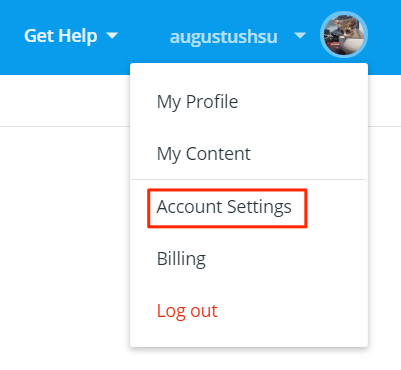
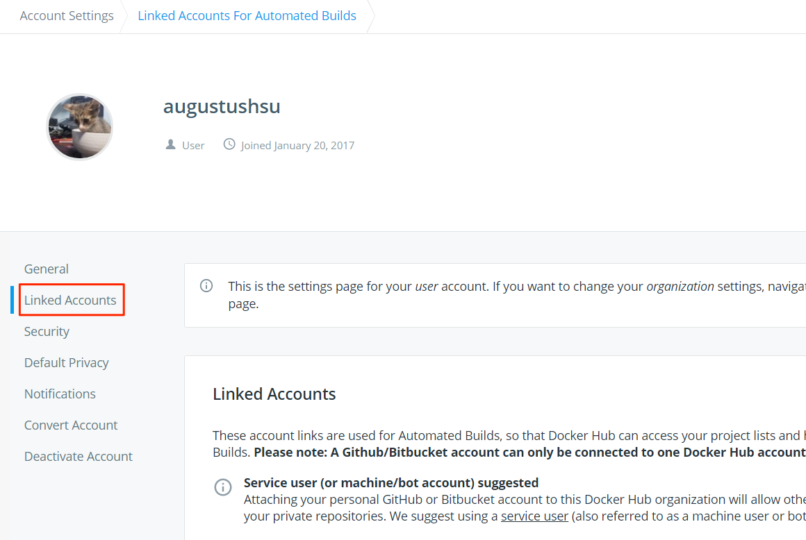
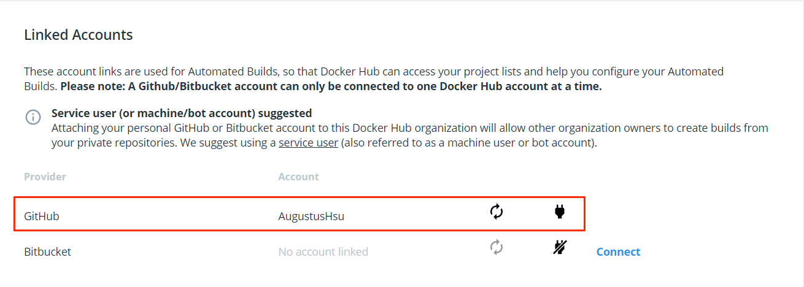
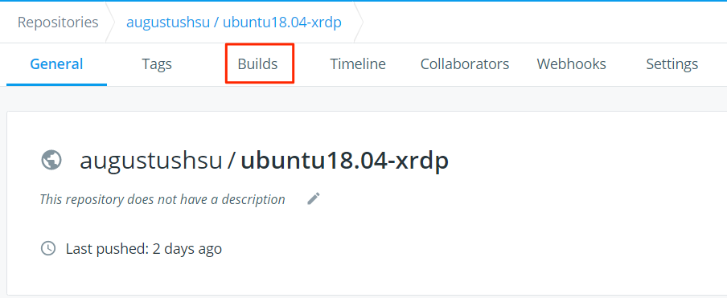
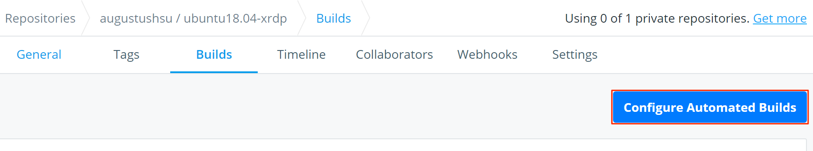
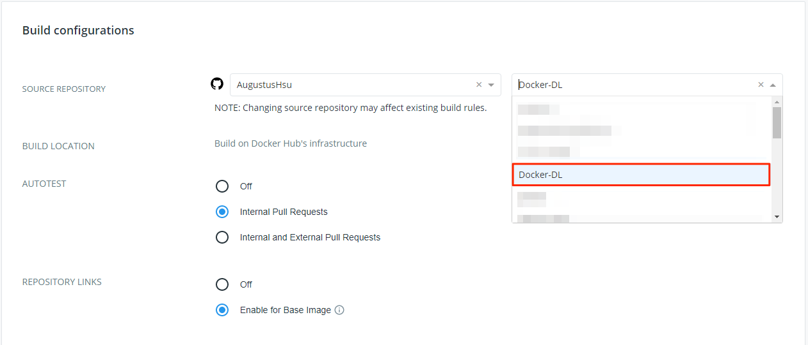

DL Machine系列-04 Docker Hub Automated Build
Docker Hub Automated Builds
Automated Builds是Docker Hub上提供的功能，它可以在你Github上有更新的時候，自動地幫你Build你的Dockerfile，產生一個新的Image。
連結Github
點選頭像可以看到Account Setting：

再點選Linked Accounts，跟你的Github做連結：

連結完會像這樣：

點選你要連結的Docker Repository，接著點選Build：

再來點選Configure Automated Builds：

可以看到你帳號的右邊可以選擇你要連結的Github Repository：

在Configure Automated Builds下面有一些設定可以調整，可以設定不同branch有不同的tag可以設定，它有舉一些例子、還有命名規則可以去查看。
Docker Hub Build Error
在Docker Hub的時候，會看到下面這個狀況：
1 | ...returned a non-zero code: 2 |
後來經過測試發現，這是因為我有使用ARG這個參數導致的，因為在Build你的Docker Image的時候會需要加上這些參數：
1 | sudo docker build -t image_name:tag \ |
雖然說在Docker Hub上面有：
BUILD ENVIRONMENT VARIABLES
可以調整，不過我當時怎麼調整都會有問題。
所以後來我直接將Dockerfile加上預設值：
1 | -ARG USERNAME |
這樣就可以成功Automated Build你的Dockerfile了。
DL Machine系列-04 Docker Hub Automated Build